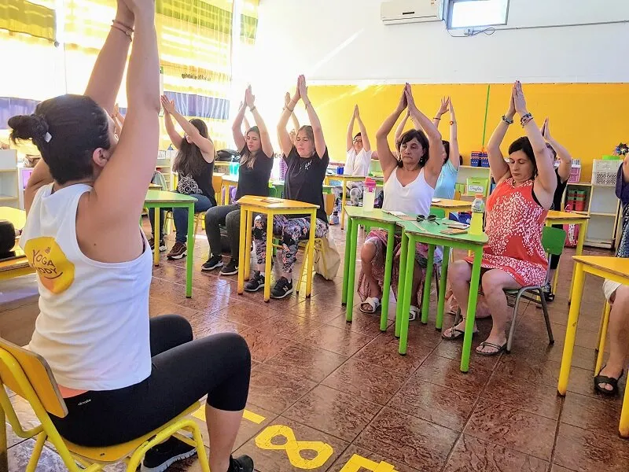

¿Realizar sesiones de Yoga en el aula trae beneficios para los niños? La educación infantil tiene diversas etapas, todas fundamentales para su posterior desenvolvimiento, y estamos acostumbrados a verlos crecer en contextos escolares y familiares en los que aprenden a leer, escribir, hablar, contar, calcular, entre tantas otras cosas… Por supuesto que esto les hace bien, y los inserta en el mundo académico y laboral, pero la pregunta que ahora queremos traer a discusión es: ¿cuentan con un desarrollo integral?
Muchos dirían que sí, ya que además de sus clases teóricas realizan una cátedra deportiva en sus escuelas y de esa forma se ejercitan, se mantienen en movimiento, y ayudan a que su metabolismo esté más sano. Pero continúa siendo relevante la pregunta sobre la que a continuación reflexionaremos: ¿se favorece así su autoconocimiento físico y emocional?
Lo cierto es que los niños también son vulnerables ante el estrés; además su autoestima, por estar en etapa de desarrollo, es muy susceptible a los estímulos de su entorno. La investigadora de la Universidad Internacional de La Rioja, de la Facultad de Educación, Ana Aranzabal Isasa, cuestiona este tema al realizar una investigación titulada “Yoga para niños: propuesta de intervención en el aula del segundo ciclo de Educación Infantil” En esta investigación intenta usar el Yoga “como recurso didáctico y mediante el juego, para favorecer el desarrollo del autoconocimiento físico y emocional del alumnado”
Al hablar de una práctica integral debemos tomar en cuenta que, practicar Yoga en el aula, en edad temprana, ayuda a que los niños conozcan mejor sus cuerpos, sus mentes, mantengan una mejor postura –que repercute en todas las esferas de sus vidas–, se concentren mejor al leer y escribir, y sean menos vulnerables al estrés.
Se sabe mundialmente, que van en aumento los casos de déficit de atención, falta de concentración, dolores de espalda, entre tantos otros problemas. En investigaciones como la anteriormente mencionada se propone introducir el Yoga como recurso didáctico, con el objetivo de mejorar y prevenir todos esos aspectos.
La introducción a todas las posturas, en la investigación realizada por Aranzabal, se realiza mediante un cuento. Los niños prestaron atención al cuento y luego fueron alentados a representar el animal o elemento de la naturaleza del que escucharon su historia. Los pequeños imitaron la postura de tales elementos después de ver y escuchar. A través de estas historias se fomenta su interés, al mismo tiempo que les ayuda a percibirlo como un juego, algo divertido y curioso que a la larga puede convertirse en un estilo o forma de ver la vida.
En la práctica, los pequeños se iniciaron en el aprendizaje de cómo controlar su postura, prestar atención a su cuerpo, concientizar su respiración, entender sus posibilidades y limitaciones, entre otros beneficios.
Todo esto, a la larga, permite que se acepten tal como son, que tengan una imagen adecuada y sana de sí mismos, y que además construyan su esquema corporal. Cada posición requiere sus trabajos y beneficios particulares; pero todo, en conjunto, es lo que conforma esta divertida y enriquecedora experiencia que debe fomentarse cada día más en las aulas de todo el mundo.